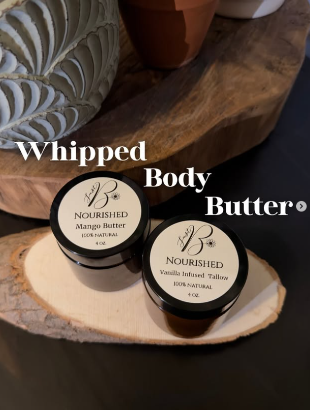
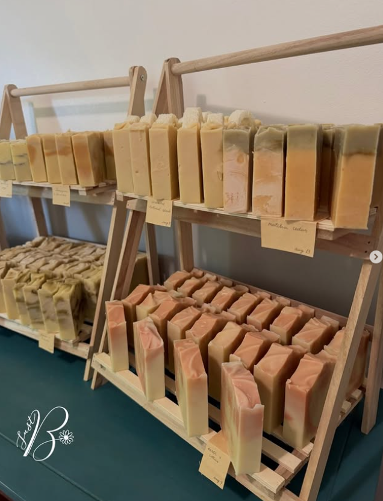

Simply natural
A calm, straightforward approach to ingredients and everyday care.
A little about Just B
Meet Brigitte Gariepy, the maker behind Just B Natural—a small-batch collection of everyday care and home products handcrafted in Gatineau, Quebec.
Just B pure.
Just B natural.
Brigitte Gariepy’s story
Just B Natural grew from Brigitte’s desire to make everyday care feel simpler, more thoughtful and more personal. Each product is created in small batches with carefully considered ingredients and hands-on attention that reflects the heart behind the brand.
What began as a simple idea has become a growing collection of soaps, body care and home essentials designed to fit naturally into real life. Brigitte continues to make and share each batch personally from Gatineau, Quebec.


A calm, straightforward approach to ingredients and everyday care.
Made in limited quantities with attention given to each product.
Questions and order confirmations are handled personally by email or Instagram.
Find your ritual
Explore the full collection, check current batches on Instagram, or collect your favourites in the cart.